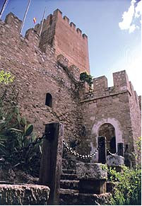

<center><div style="width:650px;"><h1> <span style="color:#ff8c00;">Castillos y Vino&nbsp;</span></h1> <h2> <span style="color:#ff8c00;">Ruta de los Castillos</span></h2> <p> &nbsp;</p> <p> La &ldquo;Ruta de los Castillos del Alto Vinalop&oacute;&rdquo; permite conocer algunas de las poblaciones que se crearon y crecieron en torno a una fortaleza, que adquirieron una gran importancia durante la Edad Media. Eran tierras fronterizas y desde esos castillos se controlaban caminos de gran importancia estrat&eacute;gica, como los que un&iacute;an el litoral alicantino con el interior de la Pen&iacute;nsula (por donde ahora discurre la autov&iacute;a y el ferrocarril Alicante-Albacete-Madrid) y las que conectaban importantes localidades murcianas (Yecla o Jumilla, por ejemplo) con poblaciones valencianas (Biar, Banyeres, Bocairent, Ontinyent, Alcoy, la Font de la Figuera, etc.). Por todo ello, se puede afirmar que la visita a las fortalezas del Alto Vinalop&oacute; nos posibilita efectuar un recorrido por la historia.<br /> <br /> Destacan los castillos de Villena, Biar, Banyeres de Mariola y Sax, aunque no debemos olvidar la existencia en los dem&aacute;s municipios de restos de otros baluartes y torres, como los de Beneixama y Camp de Mirra.<br /> El Castillo de Villena es de origen &aacute;rabe, aunque fue ampliado despu&eacute;s de la conquista cristiana por los se&ntilde;ores feudales, adem&aacute;s en Villena aconsejamos visitar las bell&iacute;simas iglesias g&oacute;ticas de Santiago y de Santa Mar&iacute;a, as&iacute; como el Palacio Municipal y el Museo Arqueol&oacute;gico &ldquo;Jos&eacute; Mar&iacute;a Soler&rdquo;, en donde se exhibe el famoso Tesoro de Villena, una fabulosa colecci&oacute;n de objetos art&iacute;sticos realizados en oro miles de a&ntilde;os antes de Cristo.</p> <p> El Castillo de Sax, situado en lo alto de una cresta rocosa, cuenta con dos torres: la m&aacute;s antigua, del siglo XII (&eacute;poca almohade), y la m&aacute;s grande, la Torre del Homenaje, del siglo XIV. El Castillo de Biar (declarado monumento nacional en 1931) conserva en el interior de su torre principal una interesante b&oacute;veda de crucer&iacute;a realizada por los almohades durante el siglo XII. En el centro hist&oacute;rico de Biar no debemos olvidarnos de visitar la bell&iacute;sima iglesia parroquial y, en los alrededores de la poblaci&oacute;n, el Santuario de Nuestra Se&ntilde;ora de Gracia y el acueducto medieval.<br /> <br /> En el castillo &aacute;rabe de Banyeres &ndash;situado a 830 metros de altitud, en el centro de la poblaci&oacute;n- destaca la gran Torre del Homenaje (o &ldquo;Torre Major&rdquo;), que adquiere gran importancia durante las fiestas de Moros y Cristianos que, en honor al patr&oacute;n Sant Jordi, se celebran desde hace varios siglos del 22 al 25 de abril.</p> <p> <!--[if gte vml 1]><v:shapetype id="_x0000_t75" coordsize="21600,21600" o:spt="75" o:preferrelative="t" path="m@4@5l@4@11@9@11@9@5xe" filled="f" stroked="f"> <v:stroke joinstyle="miter"/> <v:formulas> <v:f eqn="if lineDrawn pixelLineWidth 0"/> <v:f eqn="sum @0 1 0"/> <v:f eqn="sum 0 0 @1"/> <v:f eqn="prod @2 1 2"/> <v:f eqn="prod @3 21600 pixelWidth"/> <v:f eqn="prod @3 21600 pixelHeight"/> <v:f eqn="sum @0 0 1"/> <v:f eqn="prod @6 1 2"/> <v:f eqn="prod @7 21600 pixelWidth"/> <v:f eqn="sum @8 21600 0"/> <v:f eqn="prod @7 21600 pixelHeight"/> <v:f eqn="sum @10 21600 0"/> </v:formulas> <v:path o:extrusionok="f" gradientshapeok="t" o:connecttype="rect"/> <o:lock v:ext="edit" aspectratio="t"/> </v:shapetype><v:shape id="Imagen_x0020_2" o:spid="_x0000_s1026" type="#_x0000_t75" alt="La ruta de los castillos" style='position:absolute;margin-left:0; margin-top:-.3pt;width:150pt;height:217.5pt;z-index:1;visibility:visible; mso-wrap-distance-left:0;mso-wrap-distance-right:0; mso-position-vertical-relative:line' o:allowoverlap="f"> <v:imagedata src="images/castillo.jpg" o:title=""/> <w:wrap type="square"/> </v:shape><![endif]--><!--[if !vml]--> <!--[endif]-->Al realizar la visita a las poblaciones citadas, comprende el viajero perfectamente que las fiestas mayores de los municipios del Alto Vinalop&oacute; son las de Moros y Cristianos, ya que los hechos hist&oacute;ricos que las fundamentan todav&iacute;a parecen permanecer relativamente cercanos, ayudando a la conservaci&oacute;n de la memoria colectiva la existencia de las fortalezas &aacute;rabes en lo alto de las diferentes poblaciones. Bocairent.</p> <p> &nbsp;</p> <p> Una gran parte de esta &ldquo;Ruta de los Castillos del Alto Vinalop&oacute;&rdquo; puede recorrerse mediante una singular v&iacute;a verde: la &ldquo;del Xixarra&rdquo;. Dicha v&iacute;a verde utiliza la explanaci&oacute;n de un ferrocarril de v&iacute;a estrecha que comenz&oacute; a funcionar en 1884 (entre Villena y Banyeres), que enlazaba Yecla con Muro de Alcoy y que fue suprimido hacia 1970. Se puede seguir sin apenas problemas el trayecto que segu&iacute;an el popular tren de vapor conocido popularmente como &ldquo;El Xixarra&rdquo; y &ldquo;el Autov&iacute;a&rdquo; (automotor para viajeros, de tracci&oacute;n diesel), partiendo de Villena y continuando por Biar, Beneixama y el caser&iacute;o de &ldquo;el Salze&rdquo; hasta llegar a Banyeres de Mariola, desde donde se puede proseguir hasta Bocairent, Alfafara, Agres y Muro de Alcoy.</p> <p> &nbsp;</p> <h2> <span style="color:#ff8c00;">Vinos del Vinalop&oacute;</span></h2> <p> &nbsp;</p> <p> El&nbsp;<strong>cultivo de la vid en el Valle de Vinalop&oacute;</strong>&nbsp;(Alicante) es antiqu&iacute;simo, tanto para la obtenci&oacute;n de vino como&nbsp;<strong>uva de mesa</strong>.</p> <p> Dentro de este cultivo, podemos diferenciar dos grandes zonas: las que se dedican al cultivo de la vid para la producci&oacute;n de&nbsp;<strong>vinos</strong>, como&nbsp;<a href="http://es.wikipedia.org/wiki/Vino_moscatel" title="Vino moscatel">Moscatel</a>, Fondill&oacute;n (<a href="http://es.wikipedia.org/wiki/Mon%C3%B3var" title="Mon&oacute;var">Mon&oacute;var</a>,&nbsp;<a href="http://es.wikipedia.org/wiki/Pinoso" title="Pinoso">Pinoso</a>, etc,); o las que se dedican a la producci&oacute;n de uva de mesa (<a href="http://es.wikipedia.org/wiki/Novelda" title="Novelda">Novelda</a>,&nbsp;<a href="http://es.wikipedia.org/wiki/Aspe" title="Aspe">Aspe</a>,&nbsp;<a href="http://es.wikipedia.org/wiki/Monforte_del_Cid" title="Monforte del Cid">Monforte del Cid</a>, etc,). La gran calidad de la uva recogida en la comarca, ha promovido que se le otorgue la denominaci&oacute;n de origen&nbsp;<a href="http://es.wikipedia.org/wiki/Uva_de_mesa_embolsada_Vinalop%C3%B3" title="Uva de mesa embolsada Vinalop&oacute;">Uva de mesa embolsada Vinalop&oacute;</a>. Una uva de mesa blanca, embolsada, de una calidad superior.</p> <p> Alrededor de estas localidades observamos un escenario encantador rodeado de vi&ntilde;edos, monta&ntilde;as y desde donde podremos ver la espectacular cantera de m&aacute;rmol, m&aacute;s conocida en la zona como &ldquo;las cataratas del Vinalop&oacute;&rdquo;.</p> </div></center>